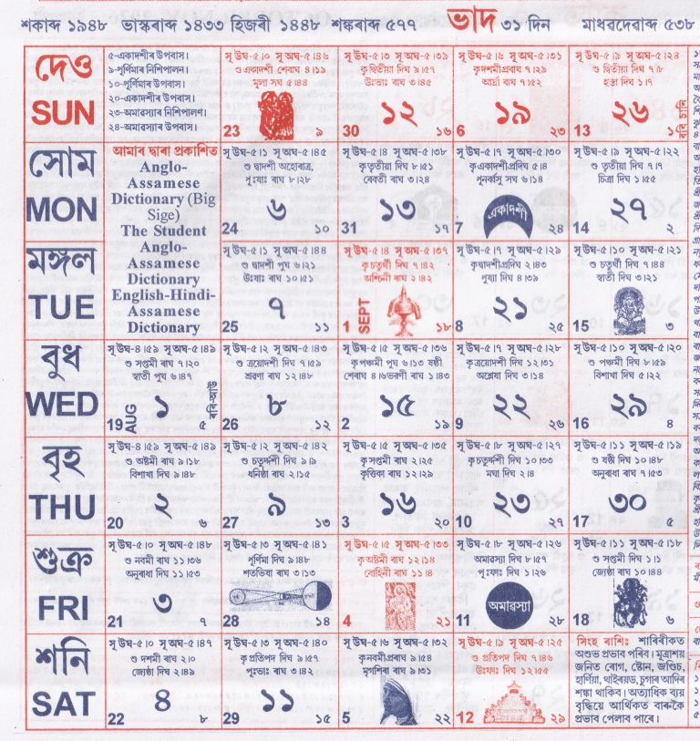

<table style="margin-left:auto; margin-right:auto; max-width:700px; border-collapse:collapse;" border="1" cellpadding="10">
  <tbody>

    <!-- Title -->
    <tr>
      <td>
        <h1 style="text-align:center;">ভাদ</h1>
      </td>
    </tr>

    <!-- Image -->
    <tr>
      <td style="text-align:center;">
        
      </td>
    </tr>

    <!-- Main Content -->
    <tr>
      <td style="text-align:justify; line-height:1.6;">

        <p><strong>১ ভাদ:</strong> বিভিন্ন সত্ৰত তিথি পালন, উষা কীৰ্ত্তন আৰম্ভ।</p>

        <p><strong>২ ভাদ:</strong> বৈষ্ণৱ কবি আৰু সত্ৰাধিকাৰৰ তিথি অনুষ্ঠান।</p>

        <p><strong>৫ ভাদ:</strong> শ্ৰীশ্ৰী কৃষ্ণৰ ঝুলন যাত্ৰা আৰম্ভ, বাম্বোলপিটা উৎসৱ।</p>

        <p><strong>৮ ভাদ:</strong> মিলাদ-উন-নবি (ইদ-ই-মিলাদ)।</p>

        <p><strong>৯–১০ ভাদ:</strong> ঝুলন যাত্ৰা সমাপন, ৰক্ষাবন্ধন, চন্দ্ৰগ্ৰহণ (অদৃশ্য)।</p>

        <p><strong>১৩ ভাদ:</strong> ইদ-ই-মৌলাদ পালন।</p>

        <p><strong>১৪ ভাদ:</strong> শ্ৰীশ্ৰী মাধৱদেৱৰ তিৰোভাৱ তিথি।</p>

        <p><strong>১৭ ভাদ:</strong> শ্ৰীকৃষ্ণ জন্মাষ্টমী, বিভিন্ন সত্ৰত মহোৎসৱ।</p>

        <p><strong>১৮ ভাদ:</strong> নন্দোৎসৱ, শিক্ষক দিৱস, মাদাৰ টেৰেছাৰ স্মৃতি দিৱস।</p>

        <p><strong>২০–২১ ভাদ:</strong> পালনাম আৰু তিথি অনুষ্ঠান।</p>

        <p><strong>২৫ ভাদ:</strong> মহাপুৰুষ শ্ৰীশ্ৰী শঙ্কৰদেৱৰ তিৰোভাৱ তিথি।</p>

        <p><strong>২৮ ভাদ:</strong> গণেশ চতুৰ্থী, গণেশ পূজা।</p>

        <p><strong>২৯ ভাদ:</strong> ঠাকুৰ অনুকূল চন্দ্ৰৰ আবিৰ্ভাৱ দিৱস।</p>

        <p><strong>৩১ ভাদ:</strong> বিশ্বকৰ্ম্মা পূজা, শ্বহীদ স্মৃতি দিৱস।</p>

      </td>
    </tr>

    <!-- Astrological Info -->
    <tr>
      <td>
        <p><strong>ৰবিশুদ্ধি:</strong> ১৩ তাৰিখৰ পৰা মেষ, মিথুন, কৰ্কট, তুলা, বৃশ্চিক, ধনু আৰু মীন ৰাশিৰ।</p>

        <p><strong>গুৰুশুদ্ধি:</strong> মিথুন, কন্যা, বৃশ্চিক, মকৰ আৰু মীন ৰাশিৰ।</p>
      </td>
    </tr>

    <!-- Astrology Notes -->
    <tr>
      <td style="text-align:justify;">
        <p><strong>জ্যোতিষতত্ত্ব:</strong> এই মাহত জন্ম লোৱা ব্যক্তি ধীৰ, গম্ভীৰ, শত্ৰুবিজয়ী আৰু হাস্যপ্ৰিয় হয়। এই মাহত শুভ কৰ্ম সীমিত কৰা উচিত।</p>
      </td>
    </tr>

    <!-- Muhurat -->
    <tr>
      <td>
        <p><strong>শুভ দিনসমূহ:</strong></p>
        <ul>
          <li>পঞ্চামৃত: ৫, ২৬, ৩০</li>
          <li>সাধভক্ষণ: ১, ২৬, ২৭</li>
          <li>নামকৰণ: ১, ৮, ১০, ১৭, ২০, ২৯, ৩০</li>
          <li>অন্নপ্ৰাশন: ৮, ২৬</li>
          <li>গৃহপ্ৰৱেশ: ৮–১৩</li>
          <li>হালখাতা: ৫, ১০, ১২, ২৪, ৩১</li>
        </ul>
      </td>
    </tr>

  </tbody>
</table>
